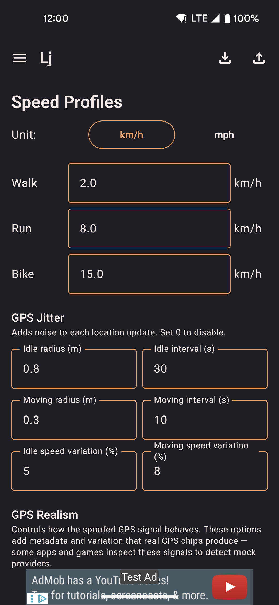

Settings
Configure speed profiles, GPS realism, widget controls, and data export/import.

- Edit Walk, Run, and Bike speed presets used by the joystick, routes, and roaming.
- Toggle GPS realism features independently: bearing hold, altitude drift, warm-up envelope, satellite count, signal dropouts.
- Choose which controls appear in the floating widget.
Speed Profiles
Sets the movement speed for joystick, route replay, and roaming. Changes apply to the next tick. All speeds are stored internally in m/s regardless of the display unit you choose.
| Option | Description |
|---|---|
| Unit | Display unit for speed inputs: m/s, km/h, or mph. Switching units converts all speed fields in the UI — the underlying value in m/s is unchanged. |
| Walk | Default 2.0 km/h (0.5556 m/s). Typical slow walking pace. Used when the joystick or route replay has the Walk profile active. Walk is also the default profile for route replay when no profile is specified. |
| Run | Default 8.0 km/h (2.2222 m/s). Typical jogging pace. Selects the foot-routing profile in OSRM when road-following is enabled. |
| Bike | Default 15.0 km/h (4.1667 m/s). Cycling pace. Selects the cycling profile in OSRM road routing, which prefers bike lanes and avoids motorways. |
Limits: Each profile is clamped to a minimum of 0.1 m/s (~0.36 km/h) and a maximum of 15.0 m/s (~54 km/h). Values outside this range are silently coerced on save.
Anti-cheat warning
If any speed profile is set above 8 m/s (~28.8 km/h / ~17.9 mph), a warning banner appears inline below that field in Settings. The warning reads:
"Speed exceeds 8 m/s — may trigger anti-cheat in some games"
This is a passive advisory only — it does not block saving, cap your speed, or communicate with any external service. The threshold of 8 m/s was chosen because it is well above any realistic human movement speed. Many location-aware games flag sustained GPS movement faster than a sprint (roughly 7–10 m/s) as suspicious, since no pedestrian legitimately moves that fast for extended periods.
The warning applies independently to each of the three profiles. You can dismiss it by lowering the speed below 8 m/s, or ignore it if you are using the app for a purpose where speed detection is not a concern. The app does not impose any speed limit — 15 m/s (~54 km/h) is the maximum the input field accepts.
GPS Jitter
Adds per-tick noise to each location update to simulate natural GPS drift. Set any value to 0 to disable that dimension of noise.
| Option | Description |
|---|---|
| Idle radius | Maximum random offset applied while stationary (in meters or feet depending on unit). A small idle radius (1–3 m) makes the position look like a real GPS chip slowly drifting. |
| Idle interval | How often (in seconds) a new random offset is picked while stationary. Longer intervals reduce noise frequency; shorter intervals create a jittery trace. |
| Moving radius | Maximum random offset applied while moving. Keep this smaller than the idle radius to avoid position jumps that look unnatural when the joystick is active. |
| Moving interval | How often (in seconds) a new random offset is picked while moving. |
| Idle speed variation | Random ±% applied to the reported speed while stationary. Set to 0 for a perfectly still position (speed = 0). A value of 5–10% simulates minor GPS measurement noise at rest. |
| Moving speed variation | Random ±% applied to the reported speed while moving. Adds natural variation so the speed field does not read as a constant integer every tick. |
Elevation Jitter
Controls the noise injected into the accelerometer and rotation-vector sensors used by Elevation Controls. Only active when Elevation Controls is enabled in the Floating Widget section. Requires root.
| Option | Description |
|---|---|
| Tilt jitter (°) | Random variation added to the tilt angle each tick. Default ±2.25° (5% of the 45° base angle). Simulates natural hand tremor so the sensor output does not look synthetic. |
| Accel noise (m/s²) | Per-axis Gaussian noise added to the accelerometer values each tick. Default ±0.35 m/s². Mimics real sensor noise seen on physical hardware. |
GPS Realism
Independent toggles that make the spoofed GPS signal behave more like a real hardware chip. Some apps and games inspect these fields to detect mock providers — enabling all options reduces the chance of detection.
| Option | Description |
|---|---|
| Hold bearing when stationary | Keeps the last known heading when the simulated device stops moving, instead of snapping to 0° (north). Real GPS chips do the same — a sudden north-reset is a common mock-location tell. Default: on. |
| Vary altitude | Applies a small Gaussian random walk to the reported altitude instead of always reporting 0 m. A flat zero altitude is an obvious signal that the location is synthetic. Default: on. |
| GPS warm-up simulation | Starts each spoofing session with degraded accuracy (wide accuracy radius) that converges to normal over ~30 s, simulating a cold GPS fix. Turn off if you need precise positioning immediately at session start. Default: off. |
| Realistic satellite count | Attaches satellite metadata to each update: 7–14 satellites visible, 6–12 contributing to the fix. Some apps flag zero satellites as a spoofing signal. Default: on. |
| Suspended mocking | Briefly pauses location updates (~2 s every ~10 s) to mimic real GPS signal dropouts. Automatically disabled during route replay. Turn on only if the target app specifically watches for continuous update streams. Default: off. |
Map
Controls how the in-app map behaves while spoofing is active.
| Option | Description |
|---|---|
| Remember last location | Restores the most recently spoofed position on app restart so you do not have to re-enter coordinates. The position is saved to local storage after every update. |
| Follow location on map | Keeps the map camera centred on the spoofed position as it moves. Panning the map manually disables follow until you tap the re-centre button. |
Favorites
Options for the favorites list.
| Option | Description |
|---|---|
| Show hot locations | Upserts a curated list of 26 popular locations (cities, parks, landmarks) into your favorites. Off by default. When disabled, only the entries added by this feature are removed — your own favorites are never deleted. See Favorites → Hot locations for the full list of locations and upsert behaviour. |
Floating Widget
Selects which quick-access buttons appear in the floating widget overlay when it is expanded. Each item can be toggled independently.
| Option | Icon | Description |
|---|---|---|
| Map shortcut | 📍 | Opens a compact full-screen map overlay without switching back to the main app. Supports walk-to, teleport, and roaming controls from the overlay. |
| Show/hide joystick | 👁 | Toggles the floating joystick overlay on or off without opening the app. The joystick must already be running via the main screen. |
| Lock joystick | 🔒 | Holds the joystick direction after you release your finger, so the simulated device keeps moving without continuous input. Tap again to unlock. |
| Routes picker | 🗺 | Lists all saved routes with start, loop, reverse, and return options. While a route is replaying, the icon expands to show pause and stop controls inline. |
| Favorites picker | ❤️ | Lists saved favorite locations with one-tap teleport and walk shortcuts. Also lets you save the current spoofed position as a new favorite from the overlay. |
| Speed cycle | ⚡ | Cycles through Walk → Run → Bike speed profiles with a single tap. The icon changes to reflect the active profile. |
| Elevation controls | ⊞ | Shows a separate floating overlay with three elevation buttons: tilt up (↑), neutral (○), tilt down (↓). Injects synthetic sensor events to make apps see the phone as tilted. Requires root. Enabling this option triggers a Magisk root-access prompt. |
Roaming defaults
Default values pre-filled in the roaming setup sheet when starting a roaming session from the map.
| Option | Description |
|---|---|
| Radius | Maximum distance from the starting point that random waypoints can be placed. Larger values spread movement further from the centre. |
| Route distance | Total distance to walk before the roaming session ends. The session stops once the cumulative distance reaches this value. |
| Speed profile | Which speed preset (Walk / Run / Bike) is used for roaming movement. Bike also selects the cycling profile in OSRM road routing. |
| Follow roads | Routes each leg through OSRM so movement follows real walkable paths instead of straight lines. Falls back to straight-line if OSRM is unavailable. |
| Return to start | After the main roaming loop completes, the simulated device walks back to the original starting position. |
External services
locationjoystick is offline-first. It does not require an account and sends no analytics or telemetry. However, two optional network features make outbound requests:
| Service | When used | What is sent |
|---|---|---|
| OSRM router.project-osrm.org |
Road-following routes, roaming with "Follow roads" enabled, guided route creation. Only contacted when you explicitly choose road-following. | A list of latitude/longitude coordinate pairs (your waypoints or random roaming targets). No device identifiers, no account data. The public OSRM demo server is operated by the OSRM project. |
| Nominatim nominatim.openstreetmap.org |
Place-name search in the route creator and the favorites map picker. Only contacted when you type a search query. | The search string you type (place name or address). No GPS coordinates, no identifiers. The public Nominatim instance is operated by the OpenStreetMap Foundation. |
Map tiles (OpenStreetMap via MapLibre) are fetched from tile.openstreetmap.org as you pan and zoom the map. Each tile request includes the tile coordinates (zoom level, x, y) but no personal data.
All three services are used only as needed by the feature you are actively using and can be avoided entirely by not using road-following, place search, or the map (e.g. by entering coordinates directly in Favorites).
QR transfer
Share your entire configuration between devices by scanning a sequence of QR codes — no cables, no accounts, no cloud.
Export / Import
Back up or restore all app data — routes, favorites, speed profiles, widget config, jitter settings, and roaming defaults.
| Action | Description |
|---|---|
| Export via QR code | Serialises the current configuration into a sequence of QR codes for scanning on another device. |
| Export settings | Writes a JSON backup file to device storage, which you can share or keep manually. |
| Import from QR code | Opens the camera to scan an export from another device. Collects chunks until complete, then prompts to Add (merge) or Replace existing data. |
| Import from file | Opens a file picker for a previously exported JSON backup. Prompts to Add or Replace. |
| Import from GPS Joystick | Migrates routes and favorites from a GPS Joystick export file. Imported routes are saved as straight-line segments. |
| Import from YAMLA | Migrates favorites and speed settings from a YAMLA JSON export. |